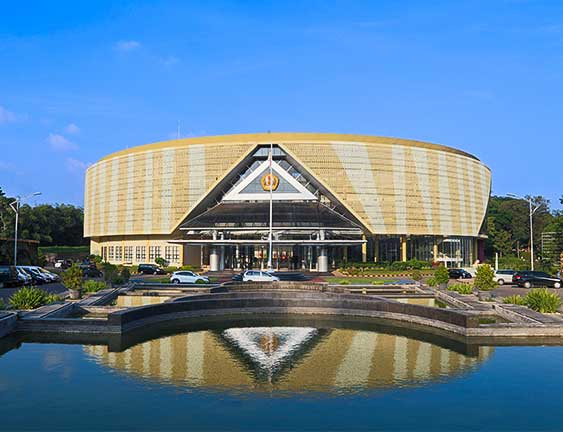

Universitas Padjadjaran (UNPAD) merupakan salah satu perguruan tinggi negeri terkemuka di Indonesia yang berdiri sejak 11 September 1957 dan berlokasi di Jawa Barat. Kampus utama UNPAD berada di Jatinangor, Kabupaten Sumedang, dengan lingkungan yang luas, hijau, dan nyaman untuk mendukung kegiatan belajar mahasiswa. UNPAD memiliki berbagai fakultas dan program studi di bidang ilmu sosial, humaniora, kesehatan, sains, teknologi, ekonomi, hukum, dan bidang lainnya. Selain kegiatan akademik, UNPAD juga menyediakan berbagai fasilitas serta kegiatan organisasi, penelitian, dan pengembangan minat dan bakat mahasiswa. Dengan lingkungan akademik yang dinamis, UNPAD berkomitmen menghasilkan lulusan yang berkompeten, berkarakter, dan mampu memberikan kontribusi bagi masyarakat.